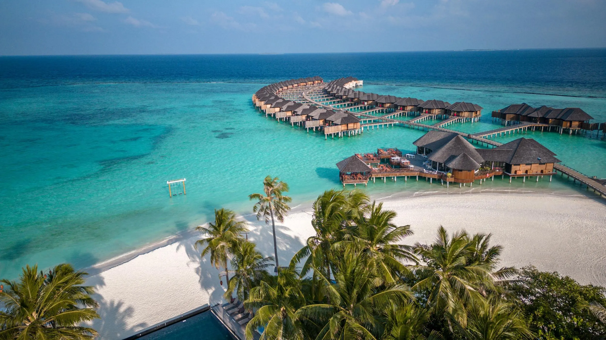
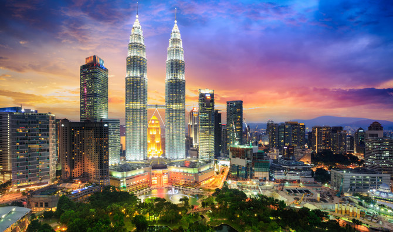

Destinations
Choose Your Place

Bangkok
Bangkok, Thailand's capital, is a large city known for ornate shrines and vibrant street life. The boat-filled Chao Phraya River feeds its network of canals, flowing past the Rattanakosin royal district, home to opulent Grand Palace and its sacred Wat Phra Kaew Temple. Nearby is Wat Pho Temple with an enormous reclining Buddha and, on the opposite shore, Wat Arun Temple with its steep steps and Khmer-style spire.
Maldives
The Maldives, officially the Republic of Maldives, is a country and archipelagic state in South Asia in the Indian Ocean. The Maldives is named after the main island and capital of Male. The word "Maldives" means "the islands of Male".

Malaysia
Malaysia is a Southeast Asian country occupying parts of the Malay Peninsula and the island of Borneo. It's known for its beaches, rainforests and mix of Malay, Chinese, Indian and European cultural influences. The capital, Kuala Lumpur, is home to colonial buildings, busy shopping districts such as Bukit Bintang and skyscrapers such as the iconic, 451m-tall Petronas Twin Towers.

Nepal
Nepal, officially the Federal Democratic Republic of Nepal, is a landlocked country in South Asia. It is mainly situated in the Himalayas, but also includes parts of the Indo-Gangetic Plain.